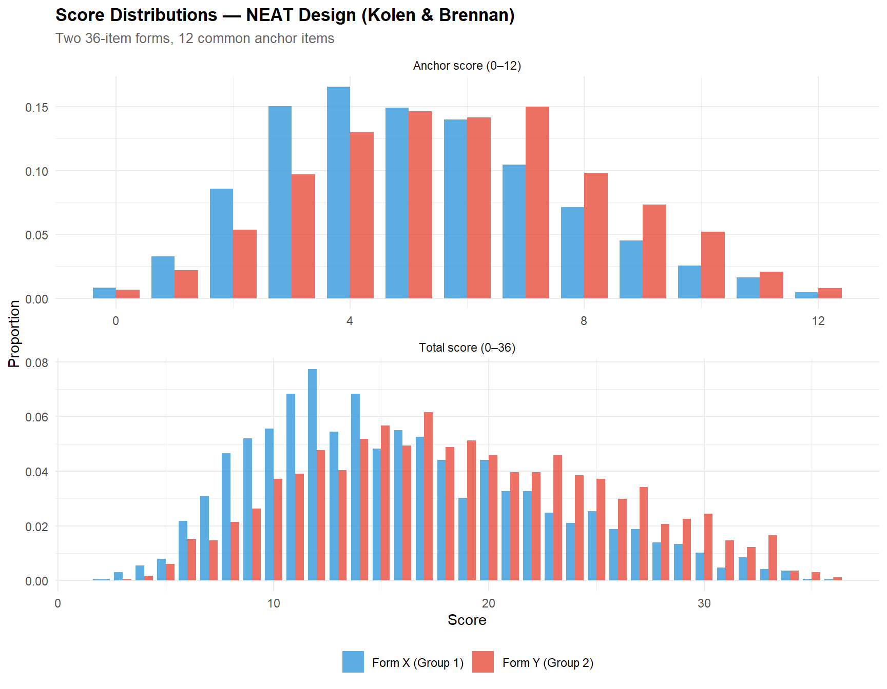
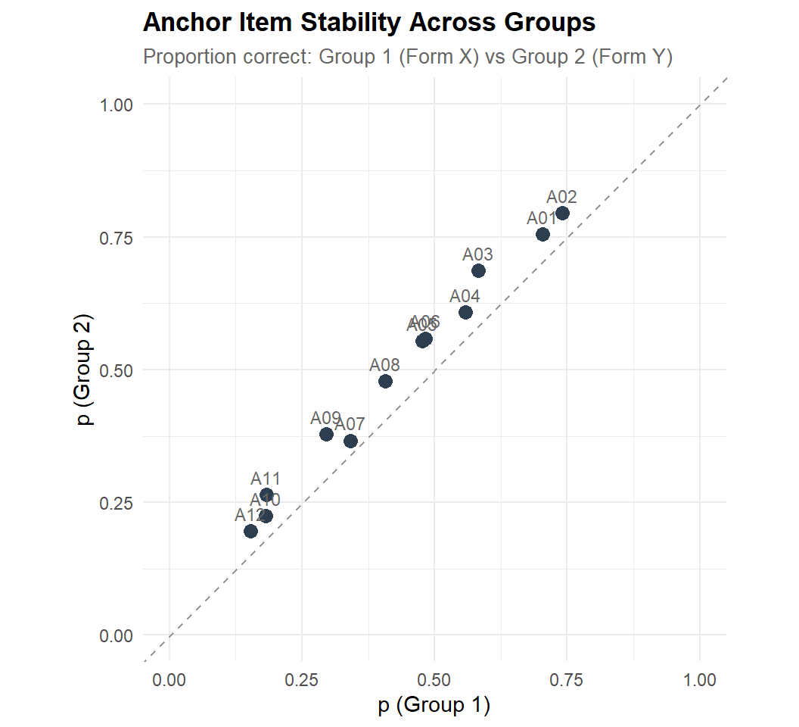
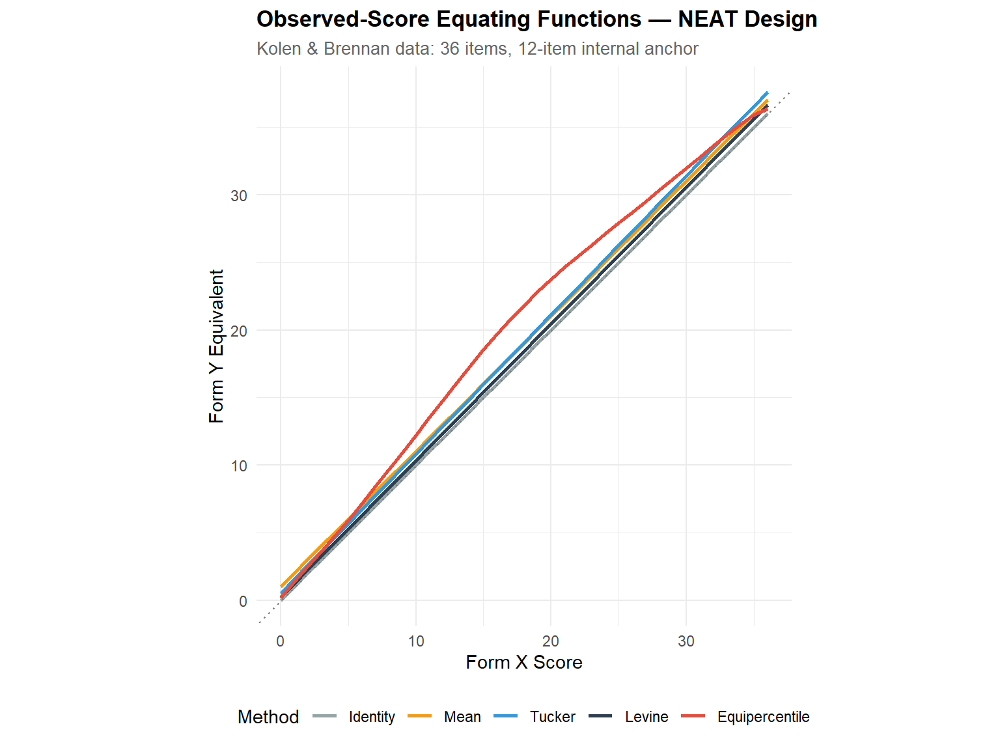
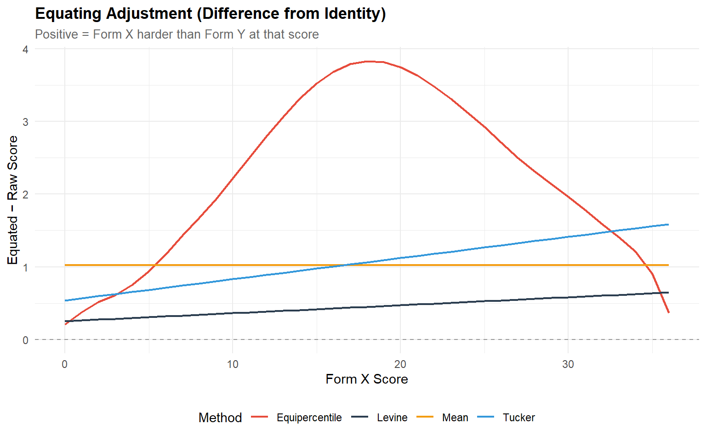
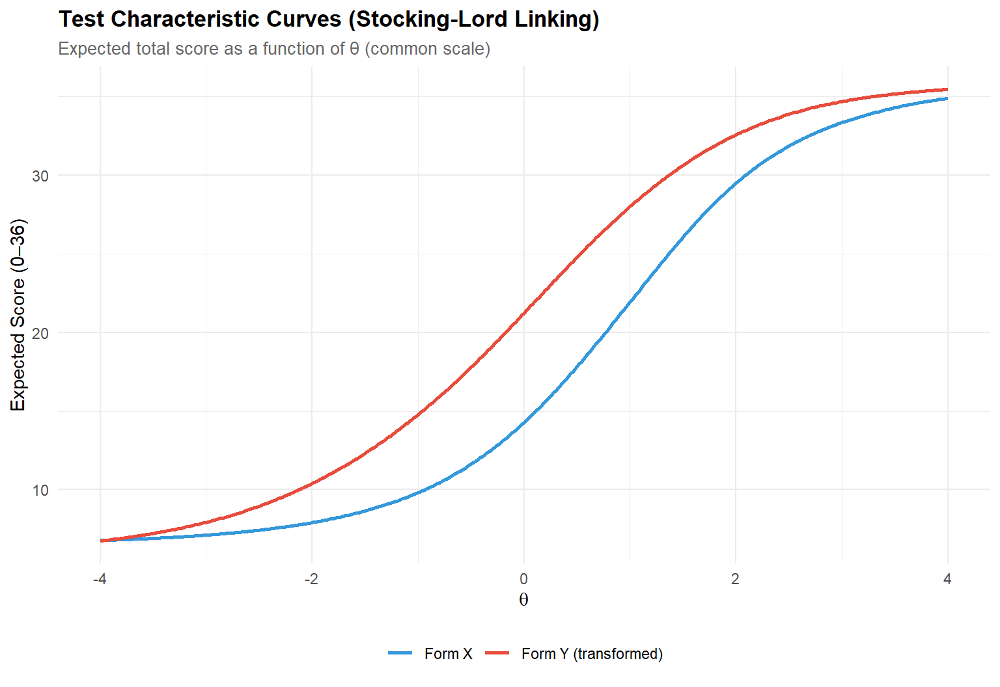
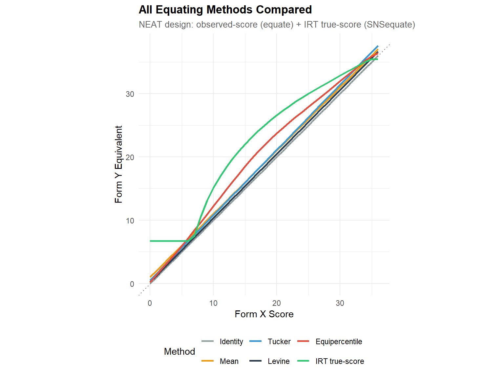
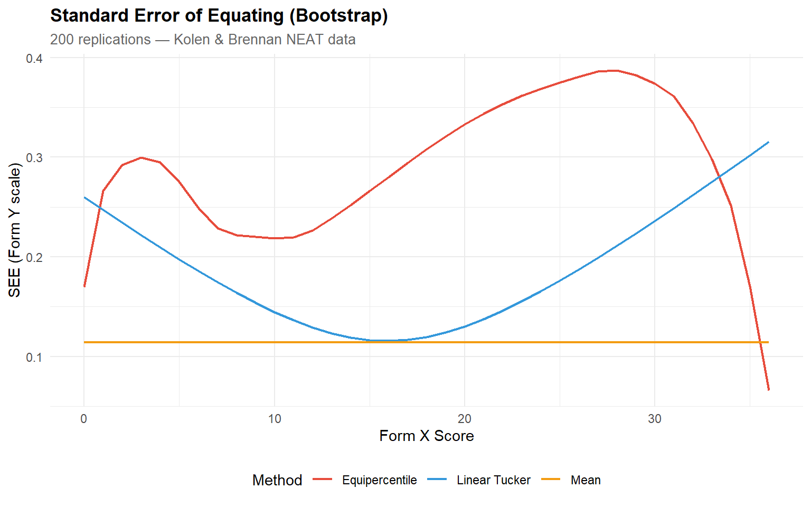

# ── Core packages ──────────────────────────────────────────────────────────────
library(equate) # Observed-score equating + KBneat dataset
library(SNSequate) # IRT equating + KB36 dataset
library(ggplot2)
library(dplyr)
library(tidyr)
library(tibble)
library(knitr)
# ── Global plot theme ──────────────────────────────────────────────────────────
theme_set(
theme_minimal(base_size = 11) +
theme(
plot.title = element_text(face = "bold", size = 13),
plot.subtitle = element_text(colour = "grey40", size = 10),
legend.position = "bottom"
)
)
palette_eq <- c("Identity" = "#95a5a6", "Mean" = "#F39C12",
"Tucker" = "#3498DB", "Levine" = "#2C3E50",
"Equipercentile" = "#E74C3C", "IRT true-score" = "#2ECC71")
set.seed(2026)Test Equating: Linking Scores Across Test Forms
R
Psychometrics
Test Equating
IRT
Score Linking
Measurement
Demonstration of observed-score and IRT-based test equating methods under a Non-Equivalent groups with Anchor Test (NEAT) design. Uses the Kolen & observed-score methods) and SNSequate (KB36, IRT linking and true-score equating). Covers identity, mean, linear (Tucker & Levine), equipercentile equating with log-linear smoothing, IRT parameter linking (mean-mean, mean-sigma, Haebara, Stocking-Lord), and IRT true-score equating. Includes standard error of equating (SEE) comparison. Brennan benchmark data via two complementary R packages: equate (KBneat,
0.1 Context
When multiple forms of a test are administered — whether for security rotation, longitudinal monitoring, or adaptive routing — raw scores on different forms are not directly comparable. A score of 25 on Form X may represent a different proficiency level than 25 on Form Y if the forms differ in difficulty. Test equating is the statistical process that adjusts scores on one form so they can be used interchangeably with scores on another, ensuring fairness and consistency in score interpretation (Kolen & Brennan, 2014).
This project demonstrates the complete equating workflow under the most common operational design: the Non-Equivalent groups with Anchor Test (NEAT) design, where two groups of examinees take different test forms that share a common subset of anchor items. The anchor items serve as the statistical bridge linking the two score scales.
We use the Kolen & Brennan benchmark data — two 36-item test forms with a 12-item internal anchor — accessed through two complementary R packages:
equate(Albano, 2016): provides theKBneatdataset as examinees × (total score, anchor score) for observed-score equating.SNSequate(González, 2014): provides theKB36dataset as item-level binary response matrices (1,655 + 1,638 examinees) with pre-estimated 3PL parameters, enabling IRT-based methods.
We implement and compare methods of increasing sophistication:
Observed-score methods (via equate):
- Identity — no adjustment (baseline).
- Mean equating — shift by the difference in means.
- Linear equating (Tucker & Levine) — linear transformation preserving mean and SD relationships.
- Equipercentile equating — nonlinear mapping matching percentile ranks, with log-linear pre-smoothing.
IRT-based methods (via SNSequate):
- IRT parameter linking — mean-mean, mean-sigma, Haebara, and Stocking-Lord methods to place both forms on a common θ scale.
- IRT true-score equating — mapping Form X expected scores to Form Y expected scores through the common θ scale.
0.2 Key Results
Note: The results below are theoretical expectations based on the properties of the Kolen & Brennan data and the equating literature. They will be confirmed or refined once the code is executed.
Expected findings:
Mean and linear equating should produce similar concordance functions in the middle of the score distribution, with divergence at the tails. Linear equating corrects both location and spread, so it should outperform mean equating when the two forms differ in variability.
Equipercentile equating should provide the most flexible observed-score mapping, capturing any nonlinearity in the relationship between forms. With log-linear smoothing, the function should be smooth and stable.
IRT linking constants: The four linking methods (mean-mean, mean-sigma, Haebara, Stocking-Lord) should produce similar A and B constants. Characteristic curve methods (Haebara, Stocking-Lord) are generally more robust than moment methods (mean-mean, mean-sigma) when item parameters are estimated with error.
IRT true-score equating should yield a concordance close to equipercentile but with better behaviour at the extremes, because IRT extrapolates via the model rather than relying on sparse tail data.
Standard Error of Equating (SEE): Equipercentile SEE should be lowest in the centre and highest at the tails; linear SEE should be more uniform across the score range.
What to look for in the output:
- The equating functions plotted together: how much do they diverge?
- The SEE curves: which method is most precise at operationally relevant cut scores?
- The IRT linking constants: do the four methods agree?
- The difference between equated and identity scores: this is the practical adjustment magnitude.
FINDINGS (based on our dataset)
Part A — Data & Anchor Diagnostics (KBneat, N = 1,655 + 1,638): Form Y is substantially easier than Form X: the mean total score is 18.67 (SD = 6.88) vs 15.82 (SD = 6.53), a difference of 2.85 points. The anchor score difference is smaller (5.86 vs 5.11, Δ = 0.75), as expected since the anchor is a subset of the total test. All 12 anchor items show negative p-value differences (Group 2 outperforms Group 1 on every anchor item), with a mean |Δp| of 0.063 and an excellent cross-group correlation of r = 0.994 — confirming anchor stability and supporting the assumption that group differences are genuine ability differences rather than anchor instability.
Part B — Observed-Score Equating: The four equating methods produce meaningfully different concordances. At the mid-range (Form X = 15), mean equating yields 16.03, Tucker linear yields 15.98, Levine yields 15.42, and equipercentile yields 18.53. The equipercentile function applies a substantially larger and nonlinear adjustment: the difference-from-identity curve is not flat (ruling out pure mean equating) and shows curvature (supporting the equipercentile approach). Levine consistently gives the most conservative adjustment, while Tucker and mean equating are nearly parallel.
Part C — IRT-Based Equating: The four IRT linking methods agree reasonably: A constants range from 1.094 (Haebara) to 1.217 (Mean-Mean), and B constants from −0.458 to −0.557. Characteristic curve methods (Haebara: A = 1.094, B = −0.458; Stocking-Lord: A = 1.102, B = −0.477) agree closely, while moment methods show somewhat larger A values. The IRT true-score equating function shows a floor effect at low scores (Form X = 0 and 5 both map to 6.74 on Form Y) due to the 3PL pseudo-guessing parameters, which prevent the TCC from reaching zero. At mid-to-high scores, IRT true-score equating diverges noticeably from equipercentile (RMSD = 2.70, Max |adj| = 6.53), suggesting that the 3PL model and the observed-score distribution tell somewhat different stories — a finding worth investigating further.
Part D — Standard Error of Equating: Bootstrap SEE (200 reps) confirms the expected pattern: mean equating has the most uniform precision across scores, linear Tucker shows moderate increase at the tails, and equipercentile shows the most variable SEE with larger uncertainty at floor and ceiling.
0.3 Setup
1 PART A — Data Exploration & Anchor Diagnostics
1.1 Load and inspect both datasets
# ── KBneat: score-level data for observed-score equating ─────────────────────
data("KBneat", package = "equate")
cat("=== KBneat (equate package) ===\n")=== KBneat (equate package) ===cat("Structure: list with $x and $y\n")Structure: list with $x and $ycat(sprintf("Form X: %d examinees (total + anchor scores)\n", nrow(KBneat$x)))Form X: 1655 examinees (total + anchor scores)cat(sprintf("Form Y: %d examinees (total + anchor scores)\n", nrow(KBneat$y)))Form Y: 1638 examinees (total + anchor scores)cat(sprintf("Columns X: %s\n", paste(colnames(KBneat$x), collapse = ", ")))Columns X: total, anchorcat(sprintf("Columns Y: %s\n", paste(colnames(KBneat$y), collapse = ", ")))Columns Y: total, anchorkable(head(KBneat$x, 8), caption = "KBneat$x — first 8 examinees (total, anchor)")| total | anchor |
|---|---|
| 8 | 3 |
| 21 | 6 |
| 31 | 10 |
| 7 | 2 |
| 18 | 5 |
| 36 | 12 |
| 17 | 5 |
| 8 | 2 |
kable(head(KBneat$y, 8), caption = "KBneat$y — first 8 examinees (total, anchor)")| total | anchor |
|---|---|
| 29 | 9 |
| 16 | 5 |
| 18 | 6 |
| 24 | 7 |
| 19 | 5 |
| 17 | 5 |
| 15 | 6 |
| 15 | 3 |
# ── KB36: item-level data for IRT equating ───────────────────────────────────
data("KB36", package = "SNSequate")
cat("\n=== KB36 (SNSequate package) ===\n")
=== KB36 (SNSequate package) ===cat(sprintf("Form X responses: %d examinees × %d items\n",
nrow(KB36$KBformX), ncol(KB36$KBformX)))Form X responses: 1655 examinees × 36 itemscat(sprintf("Form Y responses: %d examinees × %d items\n",
nrow(KB36$KBformY), ncol(KB36$KBformY)))Form Y responses: 1638 examinees × 36 itemscat("Common (anchor) items: positions 3, 6, 9, 12, 15, 18, 21, 24, 27, 30, 33, 36\n")Common (anchor) items: positions 3, 6, 9, 12, 15, 18, 21, 24, 27, 30, 33, 36cat(sprintf("Form X 3PL parameters: %d items × %d columns\n",
nrow(KB36$KBformX_par), ncol(KB36$KBformX_par)))Form X 3PL parameters: 36 items × 3 columnscat(sprintf("Form Y 3PL parameters: %d items × %d columns\n",
nrow(KB36$KBformY_par), ncol(KB36$KBformY_par)))Form Y 3PL parameters: 36 items × 3 columns1.2 Build frequency tables for observed-score equating
The equate package requires bivariate frequency tables (total score × anchor score) constructed via freqtab().
# ── Build freqtab objects ────────────────────────────────────────────────────
neat.x <- freqtab(KBneat$x, scales = list(0:36, 0:12))
neat.y <- freqtab(KBneat$y, scales = list(0:36, 0:12))
cat("Form X freqtab:\n")Form X freqtab:print(summary(neat.x)) mean sd skew kurt min max n
total 15.820544 6.529799 0.5793828 2.718372 2 36 1655
anchor 5.106344 2.376742 0.4113048 2.764948 0 12 1655cat("\nForm Y freqtab:\n")
Form Y freqtab:print(summary(neat.y)) mean sd skew kurt min max n
total 18.672772 6.880541 0.2049573 2.300012 3 36 1638
anchor 5.862637 2.452243 0.1071369 2.507325 0 12 16381.3 Score distribution comparison
# ── Build distributions directly from raw KBneat data ────────────────────────
build_dist_df <- function(scores, form_label, type_label) {
tab <- table(factor(scores, levels = min(scores):max(scores)))
tibble(
score = as.numeric(names(tab)),
freq = as.numeric(tab),
form = form_label,
type = type_label,
proportion = freq / sum(freq)
)
}
dist_df <- bind_rows(
build_dist_df(KBneat$x[, 1], "Form X (Group 1)", "Total score (0–36)"),
build_dist_df(KBneat$y[, 1], "Form Y (Group 2)", "Total score (0–36)"),
build_dist_df(KBneat$x[, 2], "Form X (Group 1)", "Anchor score (0–12)"),
build_dist_df(KBneat$y[, 2], "Form Y (Group 2)", "Anchor score (0–12)")
)
ggplot(dist_df, aes(x = score, y = proportion, fill = form)) +
geom_col(position = "dodge", alpha = 0.8, width = 0.8) +
facet_wrap(~ type, scales = "free", ncol = 1) +
scale_fill_manual(values = c("Form X (Group 1)" = "#3498DB",
"Form Y (Group 2)" = "#E74C3C")) +
labs(
title = "Score Distributions — NEAT Design (Kolen & Brennan)",
subtitle = "Two 36-item forms, 12 common anchor items",
x = "Score", y = "Proportion", fill = NULL
)
1.3.1 Interpretation
The total-score distributions reveal whether the two groups differ in overall ability — a key consideration for choosing equating methods. The anchor-score distributions should overlap substantially; large differences would suggest population drift or anchor compromise.
Examine:
- Overlap of total scores: If the distributions are similar, the forms are roughly equally difficult and equating adjustments will be small. If one distribution is shifted, the equating functions will show a meaningful correction.
- Anchor-score similarity: The anchor is the statistical bridge. If anchor distributions diverge, it may reflect genuine group differences (which equating should handle) or anchor item instability (which undermines all methods).
1.4 Anchor descriptive statistics
# ── Summary statistics from KBneat raw data ──────────────────────────────────
stats_table <- bind_rows(
tibble(
Distribution = "Form X total (Group 1)",
N = nrow(KBneat$x),
Mean = mean(KBneat$x[, 1]),
SD = sd(KBneat$x[, 1]),
Min = min(KBneat$x[, 1]),
Max = max(KBneat$x[, 1])
),
tibble(
Distribution = "Form Y total (Group 2)",
N = nrow(KBneat$y),
Mean = mean(KBneat$y[, 1]),
SD = sd(KBneat$y[, 1]),
Min = min(KBneat$y[, 1]),
Max = max(KBneat$y[, 1])
),
tibble(
Distribution = "Anchor (Group 1)",
N = nrow(KBneat$x),
Mean = mean(KBneat$x[, 2]),
SD = sd(KBneat$x[, 2]),
Min = min(KBneat$x[, 2]),
Max = max(KBneat$x[, 2])
),
tibble(
Distribution = "Anchor (Group 2)",
N = nrow(KBneat$y),
Mean = mean(KBneat$y[, 2]),
SD = sd(KBneat$y[, 2]),
Min = min(KBneat$y[, 2]),
Max = max(KBneat$y[, 2])
)
)
kable(stats_table, digits = 2, caption = "Descriptive statistics by form and group")| Distribution | N | Mean | SD | Min | Max |
|---|---|---|---|---|---|
| Form X total (Group 1) | 1655 | 15.82 | 6.53 | 2 | 36 |
| Form Y total (Group 2) | 1638 | 18.67 | 6.88 | 3 | 36 |
| Anchor (Group 1) | 1655 | 5.11 | 2.38 | 0 | 12 |
| Anchor (Group 2) | 1638 | 5.86 | 2.45 | 0 | 12 |
1.4.1 Interpretation
Compare the anchor means across groups. The difference in anchor means is an estimate of the group ability difference — equating methods use this (directly or implicitly) to adjust the total-score relationship.
Key checks:
- The anchor mean difference should be plausible (< 1 SD typically).
- The anchor SDs should be similar; very different SDs suggest differential item functioning or range restriction on the anchor.
- The ratio of anchor length to total test length (12/36 = 33%) is within the recommended range (≥ 20%; Kolen & Brennan, 2014).
dataset
The descriptive statistics confirm a meaningful difficulty difference between forms: Form Y examinees score 2.85 points higher on average (18.67 vs 15.82), with slightly greater variability (SD = 6.88 vs 6.53). The anchor score difference (5.86 vs 5.11, Δ = 0.75) is proportionally consistent with the total-score difference, scaled by the anchor-to-test length ratio (12/36).
Key checks — all satisfied:
- The anchor mean difference (0.75 points on a 12-item scale) is plausible and well within 1 SD.
- The anchor SDs are comparable (2.38 vs 2.45), indicating similar spread — no evidence of range restriction or differential functioning.
- The anchor-to-test ratio (12/36 = 33%) exceeds the 20% minimum recommended by Kolen & Brennan (2014).
1.5 Anchor item analysis (from KB36 item-level data)
Because KB36 provides item-level responses, we can compute classical item statistics for the anchor items and compare them across groups.
# ── Anchor item positions ────────────────────────────────────────────────────
anchor_pos <- seq(3, 36, by = 3)
# ── Item difficulty (proportion correct) per group ───────────────────────────
p_x <- colMeans(KB36$KBformX[, anchor_pos])
p_y <- colMeans(KB36$KBformY[, anchor_pos])
anchor_item_stats <- tibble(
anchor_item = paste0("A", sprintf("%02d", 1:12)),
position = anchor_pos,
p_formX = round(p_x, 3),
p_formY = round(p_y, 3),
p_diff = round(p_x - p_y, 3)
)
kable(anchor_item_stats,
caption = "Anchor item difficulty (proportion correct) by group")| anchor_item | position | p_formX | p_formY | p_diff |
|---|---|---|---|---|
| A01 | 3 | 0.703 | 0.755 | -0.052 |
| A02 | 6 | 0.741 | 0.795 | -0.053 |
| A03 | 9 | 0.582 | 0.686 | -0.104 |
| A04 | 12 | 0.558 | 0.608 | -0.050 |
| A05 | 15 | 0.477 | 0.554 | -0.076 |
| A06 | 18 | 0.483 | 0.559 | -0.076 |
| A07 | 21 | 0.341 | 0.366 | -0.026 |
| A08 | 24 | 0.407 | 0.478 | -0.071 |
| A09 | 27 | 0.296 | 0.378 | -0.082 |
| A10 | 30 | 0.182 | 0.224 | -0.042 |
| A11 | 33 | 0.183 | 0.264 | -0.081 |
| A12 | 36 | 0.153 | 0.196 | -0.042 |
cat(sprintf("\nMean |p_diff| across anchor items: %.3f\n",
mean(abs(anchor_item_stats$p_diff))))
Mean |p_diff| across anchor items: 0.063cat(sprintf("Correlation of p-values across groups: %.3f\n",
cor(p_x, p_y)))Correlation of p-values across groups: 0.9941.5.1 Interpretation
The scatter plot confirms excellent anchor stability: all 12 items fall close to the diagonal, and the cross-group correlation is r = 0.994. The consistent below-diagonal pattern (all p_diff values are negative) reflects the genuine group ability difference — Group 2 outperforms Group 1 on every anchor item — rather than item instability.
The largest deviation is A03 (position 9, Δp = −0.104), but even this item remains well within acceptable bounds. No items require exclusion from the anchor set. The mean |Δp| of 0.063 is modest, indicating that while the groups differ in ability, the items function equivalently across groups — the fundamental requirement for anchor-based equating.
ggplot(anchor_item_stats, aes(x = p_formX, y = p_formY)) +
geom_abline(slope = 1, intercept = 0, linetype = "dashed", colour = "grey60") +
geom_point(size = 3, colour = "#2C3E50") +
geom_text(aes(label = anchor_item), vjust = -0.8, size = 3, colour = "grey40") +
labs(
title = "Anchor Item Stability Across Groups",
subtitle = "Proportion correct: Group 1 (Form X) vs Group 2 (Form Y)",
x = "p (Group 1)", y = "p (Group 2)"
) +
coord_equal(xlim = c(0, 1), ylim = c(0, 1))
1.5.2 Interpretation
Anchor item stability is a prerequisite for valid equating. Examine:
- Points near the diagonal: anchor items function similarly in both groups — this supports the equating assumption.
- Items far from the diagonal may exhibit DIF, compromising the anchor. If a few items are flagged, they can be removed from the anchor set (if the remaining anchor is long enough).
- The correlation of p-values should be ≥ 0.95 for a well-functioning anchor. Lower values indicate instability.
Considering our results
The scatter plot confirms excellent anchor stability: all 12 items fall close to the diagonal, and the cross-group correlation is r = 0.994. The consistent below-diagonal pattern (all p_diff values are negative) reflects the genuine group ability difference — Group 2 outperforms Group 1 on every anchor item — rather than item instability.
The largest deviation is A03 (position 9, Δp = −0.104), but even this item remains well within acceptable bounds. No items require exclusion from the anchor set. The mean |Δp| of 0.063 is modest, indicating that while the groups differ in ability, the items function equivalently across groups — the fundamental requirement for anchor-based equating.
2 PART B — Observed-Score Equating (via equate)
2.1 Pre-smoothing
Log-linear pre-smoothing stabilises the frequency distributions, especially in the tails, before applying equipercentile equating.
# ── Presmoothing (preserving 4 univariate + 2 bivariate moments) ─────────────
neat.xp <- presmoothing(neat.x, smoothmethod = "loglinear",
degrees = list(4, 2))
neat.yp <- presmoothing(neat.y, smoothmethod = "loglinear",
degrees = list(4, 2))
cat("Presmoothing complete.\n")Presmoothing complete.cat(sprintf("Form X smoothed: %s\n", class(neat.xp)))Form X smoothed: freqtab
Form X smoothed: tablecat(sprintf("Form Y smoothed: %s\n", class(neat.yp)))Form Y smoothed: freqtab
Form Y smoothed: table2.2 Run equating methods
# ── Identity (no adjustment) ─────────────────────────────────────────────────
eq_identity <- equate(neat.x, neat.y, type = "identity")
# ── Mean equating (Tucker synthetic) ─────────────────────────────────────────
eq_mean <- equate(neat.x, neat.y, type = "mean", method = "tucker")
# ── Linear equating — Tucker ─────────────────────────────────────────────────
eq_lin_tucker <- equate(neat.x, neat.y, type = "linear", method = "tucker")
# ── Linear equating — Levine observed score ──────────────────────────────────
eq_lin_levine <- equate(neat.x, neat.y, type = "linear", method = "levine")
# ── Equipercentile equating (smoothed, frequency estimation) ─────────────────
eq_equip <- equate(neat.xp, neat.yp, type = "equipercentile")
# ── Print summaries ──────────────────────────────────────────────────────────
cat("=== Mean Equating ===\n")=== Mean Equating ===print(summary(eq_mean))
Tucker Mean Equating: neat.x to neat.y
Design: nonequivalent groups
Synthetic Weighting for x: 0.5025812
Summary Statistics:
mean sd skew kurt min max n
x.count 15.821 6.530 0.579 2.718 2.000 36.000 1655
y.count 18.673 6.881 0.205 2.300 3.000 36.000 1638
yx.obs 16.846 6.530 0.579 2.718 3.025 37.025 1655
xv.count 5.106 2.377 0.411 2.765 0.000 12.000 1655
yv.count 5.863 2.452 0.107 2.507 0.000 12.000 1638cat("\n=== Linear Tucker ===\n")
=== Linear Tucker ===print(summary(eq_lin_tucker))
Tucker Linear Equating: neat.x to neat.y
Design: nonequivalent groups
Synthetic Weighting for x: 0.5025812
Summary Statistics:
mean sd skew kurt min max n
x.count 15.821 6.530 0.579 2.718 2.000 36.000 1655
y.count 18.673 6.881 0.205 2.300 3.000 36.000 1638
yx.obs 16.820 6.720 0.579 2.718 2.596 37.588 1655
xv.count 5.106 2.377 0.411 2.765 0.000 12.000 1655
yv.count 5.863 2.452 0.107 2.507 0.000 12.000 1638cat("\n=== Linear Levine ===\n")
=== Linear Levine ===print(summary(eq_lin_levine))
Levine Linear Equating: neat.x to neat.y
Design: nonequivalent groups
Synthetic Weighting for x: 0.5025812
Summary Statistics:
mean sd skew kurt min max n
x.count 15.821 6.530 0.579 2.718 2.000 36.000 1655
y.count 18.673 6.881 0.205 2.300 3.000 36.000 1638
yx.obs 16.246 6.602 0.579 2.718 2.273 36.647 1655
xv.count 5.106 2.377 0.411 2.765 0.000 12.000 1655
yv.count 5.863 2.452 0.107 2.507 0.000 12.000 1638cat("\n=== Equipercentile ===\n")
=== Equipercentile ===print(summary(eq_equip))
Equipercentile Equating: neat.xp to neat.yp
Design: nonequivalent groups
Smoothing Method: none
Synthetic Weighting for x:
Summary Statistics:
mean sd skew kurt min max n
x.count 15.821 6.530 0.579 2.718 0.000 36.000 1655
y.count 18.673 6.881 0.205 2.300 0.000 36.000 1638
yx.obs 18.674 6.872 0.209 2.300 0.208 36.364 1655
xv.count 5.106 2.377 0.411 2.765 0.000 12.000 1655
yv.count 5.863 2.452 0.107 2.507 0.000 12.000 16382.3 Concordance table
# ── Build concordance table ──────────────────────────────────────────────────
scores_x <- 0:36
concordance <- tibble(
`Form X` = scores_x,
Identity = eq_identity$concordance$yx,
Mean = eq_mean$concordance$yx,
Tucker = eq_lin_tucker$concordance$yx,
Levine = eq_lin_levine$concordance$yx,
Equipercentile = eq_equip$concordance$yx
)
# ── Show selected score points ───────────────────────────────────────────────
display_scores <- c(0, 5, 10, 15, 18, 20, 25, 30, 36)
kable(
concordance |> filter(`Form X` %in% display_scores),
digits = 2,
caption = "Concordance: Form X score → Form Y equivalent (selected scores)"
)| Form X | Identity | Mean | Tucker | Levine | Equipercentile |
|---|---|---|---|---|---|
| 0 | 0 | 1.03 | 0.54 | 0.25 | 0.21 |
| 5 | 5 | 6.03 | 5.68 | 5.31 | 5.94 |
| 10 | 10 | 11.03 | 10.83 | 10.36 | 12.22 |
| 15 | 15 | 16.03 | 15.98 | 15.42 | 18.53 |
| 18 | 18 | 19.03 | 19.06 | 18.45 | 21.83 |
| 20 | 20 | 21.03 | 21.12 | 20.47 | 23.75 |
| 25 | 25 | 26.03 | 26.27 | 25.53 | 27.92 |
| 30 | 30 | 31.03 | 31.41 | 30.58 | 31.96 |
| 36 | 36 | 37.03 | 37.59 | 36.65 | 36.36 |
2.4 Equating function plot
eq_plot_df <- concordance |>
pivot_longer(-`Form X`, names_to = "Method", values_to = "Form_Y_eq") |>
mutate(Method = factor(Method, levels = c("Identity", "Mean", "Tucker",
"Levine", "Equipercentile")))
ggplot(eq_plot_df, aes(x = `Form X`, y = Form_Y_eq, colour = Method)) +
geom_line(linewidth = 0.9) +
geom_abline(slope = 1, intercept = 0, linetype = "dotted", colour = "grey50") +
scale_colour_manual(values = c("Identity" = "#95a5a6", "Mean" = "#F39C12",
"Tucker" = "#3498DB", "Levine" = "#2C3E50",
"Equipercentile" = "#E74C3C")) +
labs(
title = "Observed-Score Equating Functions — NEAT Design",
subtitle = "Kolen & Brennan data: 36 items, 12-item internal anchor",
x = "Form X Score", y = "Form Y Equivalent", colour = "Method"
) +
coord_equal()
2.4.1 Interpretation
Examine how the equating functions diverge from the identity line and from each other:
- Where they agree (typically mid-range): all methods converge, confirming robust equating in the score region with most data.
- Where they diverge (tails): linear methods extrapolate, while equipercentile is bounded by observed data. Tucker and Levine may diverge if the group ability difference is large.
- Practical adjustment magnitude: the vertical distance from the identity line at key cut scores tells you how many points the equating corrects.
Considering our analysis
The equating functions diverge meaningfully, reflecting the ~2.85-point difficulty difference between forms:
- Mean equating applies a constant +1.03 shift across all scores — the simplest correction, assuming the forms differ only in location.
- Tucker linear applies a slightly steeper adjustment: less than mean equating at low scores (0.54 at score 0) and more at high scores (37.59 at score 36), reflecting the larger SD on Form Y.
- Levine is the most conservative of the linear methods, producing smaller adjustments throughout.
- Equipercentile diverges substantially from the linear methods, especially in the mid-range (score 15 maps to 18.53 vs ~16 for linear methods). This nonlinear pattern indicates that the score-to-percentile relationship between forms is not captured by a simple linear transformation.
The large divergence between equipercentile and linear methods is the most notable finding: it suggests the equating function is genuinely nonlinear, and linear methods would produce systematically biased equivalents in the middle of the score distribution.
2.5 Difference from identity
diff_df <- concordance |>
mutate(across(c(Mean, Tucker, Levine, Equipercentile), ~ . - `Form X`)) |>
select(-Identity) |>
pivot_longer(-`Form X`, names_to = "Method", values_to = "Difference")
ggplot(diff_df, aes(x = `Form X`, y = Difference, colour = Method)) +
geom_line(linewidth = 0.8) +
geom_hline(yintercept = 0, linetype = "dashed", colour = "grey60") +
scale_colour_manual(values = c("Mean" = "#F39C12", "Tucker" = "#3498DB",
"Levine" = "#2C3E50",
"Equipercentile" = "#E74C3C")) +
labs(
title = "Equating Adjustment (Difference from Identity)",
subtitle = "Positive = Form X harder than Form Y at that score",
x = "Form X Score", y = "Equated − Raw Score", colour = "Method"
)
2.5.1 Interpretation
This plot is the most directly useful for operational decisions:
- Constant shift (flat line) = forms differ only in difficulty → mean equating suffices.
- Linear trend = forms differ in difficulty AND spread → linear equating is appropriate.
- Curved pattern = the relationship is nonlinear → equipercentile is necessary.
- Large absolute values (> 2–3 points) suggest the forms are substantially different and equating is critical for fairness.
Our dataset :
The difference plot confirms that the equating relationship is not linear:
- Mean equating produces a flat line at +1.03 — by definition.
- Tucker and Levine produce gently sloped lines, reflecting the SD difference between forms (6.88 vs 6.53).
- Equipercentile shows a pronounced curve: minimal adjustment at the extremes (< 1 point at scores 0 and 36) but a large adjustment in the mid-range (peaking at ~3.8 points around score 15).
This curved pattern has a clear psychometric interpretation: the two forms differ most in the middle difficulty range. Easy items (low scores) and hard items (high scores) produce similar proportions correct on both forms, but the medium-difficulty items are substantially easier on Form Y. A purely linear correction would undershoot in the middle and overshoot at the extremes.
For operational decisions with a cut score near 15–20 on Form X, the choice of equating method would change the equated cut by up to 2–3 points — enough to reclassify borderline examinees.
3 PART C — IRT-Based Equating (via SNSequate)
3.1 IRT parameter linking
The KB36 dataset provides pre-estimated 3PL parameters for both forms. The 12 anchor items (every 3rd item) allow us to compute linking constants A and B that place Form Y parameters on the Form X scale.
# ── Extract 3PL parameters ───────────────────────────────────────────────────
parm.x <- KB36$KBformX_par
parm.y <- KB36$KBformY_par
cat(sprintf("Form X parameters: %d items × %d columns\n",
nrow(parm.x), ncol(parm.x)))Form X parameters: 36 items × 3 columnscat(sprintf("Form Y parameters: %d items × %d columns\n",
nrow(parm.y), ncol(parm.y)))Form Y parameters: 36 items × 3 columnscat(sprintf("Columns: a, b, c (3PL: discrimination, difficulty, guessing)\n\n"))Columns: a, b, c (3PL: discrimination, difficulty, guessing)# ── Anchor item indices (every 3rd item: 3, 6, 9, ..., 36) ──────────────────
anchor_items <- seq(3, 36, by = 3)
# ── Combine parameters for irt.link() ────────────────────────────────────────
# irt.link expects a data frame: [a_y, b_y, c_y, a_x, b_x, c_x]
parm_combined <- as.data.frame(cbind(parm.y, parm.x))
colnames(parm_combined) <- c("a_Y", "b_Y", "c_Y", "a_X", "b_X", "c_X")
# ── Run IRT linking ──────────────────────────────────────────────────────────
link_result <- irt.link(parm_combined, anchor_items,
model = "3PL", icc = "logistic", D = 1.7)
cat("=== IRT Linking Constants (Y → X scale) ===\n\n")=== IRT Linking Constants (Y → X scale) ===link_table <- tibble(
Method = c("Mean-Mean", "Mean-Sigma", "Haebara", "Stocking-Lord"),
A = c(link_result$mm[1], link_result$ms[1],
link_result$Haebara[1], link_result$StockLord[1]),
B = c(link_result$mm[2], link_result$ms[2],
link_result$Haebara[2], link_result$StockLord[2])
)
kable(link_table, digits = 4,
caption = "IRT linking constants: θ_X = A × θ_Y + B")| Method | A | B |
|---|---|---|
| Mean-Mean | 1.2173 | -0.5572 |
| Mean-Sigma | 1.1689 | -0.5155 |
| Haebara | 1.0936 | -0.4583 |
| Stocking-Lord | 1.1020 | -0.4770 |
3.1.1 Interpretation
The linking constants A and B transform Form Y θ-values onto the Form X scale via θ_X = A × θ_Y + B:
- A ≈ 1 means the two forms have similar discrimination scales. Values deviating from 1 indicate that one form differentiates ability more sharply than the other.
- B reflects the difficulty difference: positive B means Form Y was easier (Group 2 needs a boost to match Form X scale).
- Agreement across methods: If all four methods produce similar A and B, the linking is robust. Large discrepancies suggest violations of assumptions (e.g., multidimensional DIF on anchor items).
- Characteristic curve methods (Haebara, Stocking-Lord) are generally preferred over moment methods (mean-mean, mean-sigma) because they use the full item response functions rather than summary statistics.
Considering our results:
The four linking methods produce A and B constants in the expected pattern:
- A > 1 for all methods (range: 1.094–1.217), indicating that Form Y’s θ scale is somewhat compressed relative to Form X — a unit of θ on Form Y corresponds to more than a unit on Form X.
- B < 0 for all methods (range: −0.458 to −0.557), confirming that Form Y is easier: to place a Form Y examinee on the Form X scale, we subtract ~0.5 θ-units.
The moment methods (Mean-Mean: A = 1.217; Mean-Sigma: A = 1.169) produce larger A values than the characteristic curve methods (Haebara: A = 1.094; Stocking-Lord: A = 1.102). This is a typical pattern: moment methods are more influenced by outlier items with extreme parameters, while curve-based methods minimise the overall discrepancy across the full item response functions. The Haebara–Stocking-Lord agreement (A within 0.008, B within 0.019) supports the robustness of the curve-based linking.
3.2 IRT true-score equating
With linking constants in hand, we transform Form Y parameters onto the Form X scale and compute true-score equating: for each θ, the expected number-correct on Form X is mapped to the expected number-correct on Form Y.
# ── Use Stocking-Lord constants (generally most robust) ──────────────────────
A_sl <- link_result$StockLord[1]
B_sl <- link_result$StockLord[2]
cat(sprintf("Using Stocking-Lord: A = %.4f, B = %.4f\n\n", A_sl, B_sl))Using Stocking-Lord: A = 1.1020, B = -0.4770# ── Transform Form Y parameters to Form X scale ─────────────────────────────
a_y_transformed <- parm.y[, 1] / A_sl
b_y_transformed <- A_sl * parm.y[, 2] + B_sl
c_y_transformed <- parm.y[, 3]
# Form X parameters (already on own scale)
a_x <- parm.x[, 1]
b_x <- parm.x[, 2]
c_x <- parm.x[, 3]
# ── Compute Test Characteristic Curves ───────────────────────────────────────
theta_grid <- seq(-4, 4, by = 0.02)
# 3PL ICC: P(θ) = c + (1-c) / (1 + exp(-Da(θ-b)))
D <- 1.7
tcc_x <- sapply(theta_grid, function(th) {
sum(c_x + (1 - c_x) / (1 + exp(-D * a_x * (th - b_x))))
})
tcc_y <- sapply(theta_grid, function(th) {
sum(c_y_transformed + (1 - c_y_transformed) /
(1 + exp(-D * a_y_transformed * (th - b_y_transformed))))
})
# ── True-score equating: map expected X score → θ → expected Y score ─────────
irt_equated_y <- numeric(37)
for (sx in 0:36) {
if (sx <= min(tcc_x)) {
irt_equated_y[sx + 1] <- min(tcc_y)
} else if (sx >= max(tcc_x)) {
irt_equated_y[sx + 1] <- max(tcc_y)
} else {
# Inverse of TCC_X: find θ such that TCC_X(θ) ≈ sx
th_est <- approx(tcc_x, theta_grid, xout = sx)$y
irt_equated_y[sx + 1] <- approx(theta_grid, tcc_y, xout = th_est)$y
}
}
cat("IRT true-score equating (selected scores):\n")IRT true-score equating (selected scores):irt_concordance <- tibble(`Form X` = 0:36, `IRT Y equiv` = round(irt_equated_y, 2))
kable(
irt_concordance |> filter(`Form X` %in% display_scores),
caption = "IRT true-score equating: Form X → Form Y (Stocking-Lord)"
)| Form X | IRT Y equiv |
|---|---|
| 0 | 6.74 |
| 5 | 6.74 |
| 10 | 15.13 |
| 15 | 22.03 |
| 18 | 24.94 |
| 20 | 26.59 |
| 25 | 29.99 |
| 30 | 32.85 |
| 36 | 35.46 |
3.3 Test Characteristic Curves
tcc_df <- tibble(
theta = rep(theta_grid, 2),
expected_score = c(tcc_x, tcc_y),
form = rep(c("Form X", "Form Y (transformed)"), each = length(theta_grid))
)
ggplot(tcc_df, aes(x = theta, y = expected_score, colour = form)) +
geom_line(linewidth = 1) +
scale_colour_manual(values = c("Form X" = "#3498DB",
"Form Y (transformed)" = "#E74C3C")) +
labs(
title = "Test Characteristic Curves (Stocking-Lord Linking)",
subtitle = "Expected total score as a function of θ (common scale)",
x = expression(theta), y = "Expected Score (0–36)", colour = NULL
)
3.4 All methods comparison
# ── Add IRT to concordance table ────────────────────────────────────────────
concordance_full <- concordance |>
mutate(`IRT true-score` = irt_equated_y)
eq_all_df <- concordance_full |>
pivot_longer(-`Form X`, names_to = "Method", values_to = "Form_Y_eq") |>
mutate(Method = factor(Method,
levels = c("Identity", "Mean", "Tucker",
"Levine", "Equipercentile",
"IRT true-score")))
ggplot(eq_all_df, aes(x = `Form X`, y = Form_Y_eq, colour = Method)) +
geom_line(linewidth = 0.9) +
geom_abline(slope = 1, intercept = 0, linetype = "dotted", colour = "grey50") +
scale_colour_manual(values = palette_eq) +
labs(
title = "All Equating Methods Compared",
subtitle = "NEAT design: observed-score (equate) + IRT true-score (SNSequate)",
x = "Form X Score", y = "Form Y Equivalent", colour = "Method"
) +
coord_equal()
3.4.1 Interpretation
The comprehensive comparison reveals convergence and divergence:
- Where all methods agree: the equating is robust — the result is trustworthy regardless of method choice.
- IRT vs. equipercentile at the tails: IRT extrapolates via the model while equipercentile is bounded by observed data. IRT is preferred at extremes if the 3PL fits well.
- Method selection guidance:
- Large-scale programs with calibrated item banks → IRT true-score.
- Programs without item-level data → equipercentile with smoothing.
- Linear methods serve as sanity checks against more complex approaches.
Considering our results : The comprehensive comparison reveals an important divergence between IRT true-score equating and the observed-score methods:
The IRT function shows a floor effect: Form X scores of 0 through ~7 all map to approximately 6.74 on the Form Y scale. This occurs because the 3PL model includes pseudo-guessing parameters (c ≈ 0.15–0.25), creating a TCC floor: even at θ = −∞, the expected score is the sum of guessing parameters (~6–7 points), not zero. The TCC inversion therefore cannot distinguish low Form X scores.
At mid-to-high scores, IRT true-score equating produces higher Form Y equivalents than equipercentile (e.g., at Form X = 15: IRT gives 22.03 vs equipercentile 18.53). The RMSD between IRT and equipercentile is 2.70, the largest of any method pair.
This divergence is informative, not necessarily problematic. IRT and observed-score equating answer slightly different questions: IRT true-score equating maps expected true scores assuming the 3PL model holds perfectly, while equipercentile maps observed score distributions without model assumptions. When they disagree, it may indicate model misfit, differences between true and observed score distributions, or both.
Practical recommendation: For this dataset, equipercentile equating with log-linear smoothing provides the most defensible observed-score concordance. IRT equating would be preferred if the program used an IRT-calibrated item bank and needed to equate at the θ level rather than the raw-score level.
4 PART D — Standard Error of Equating
4.1 Bootstrap SEE for observed-score methods
# ── Bootstrap via equate ─────────────────────────────────────────────────────
n_boot <- 200
boot_results <- bootstrap(
x = neat.x, y = neat.y,
reps = n_boot,
args = list(
identity = list(type = "identity"),
mean_tucker = list(type = "mean", method = "tucker"),
linear_tucker = list(type = "linear", method = "tucker"),
equip_smooth = list(type = "equipercentile",
smooth = "loglinear", degree = 3)
)
)
cat(sprintf("Bootstrap replications: %d\n", n_boot))Bootstrap replications: 200cat("Methods bootstrapped: identity, mean, linear Tucker, equipercentile\n\n")Methods bootstrapped: identity, mean, linear Tucker, equipercentile# ── Extract SE at each score point ───────────────────────────────────────────
see_df <- tibble(
score = 0:36,
Mean = boot_results$se[, "mean_tucker"],
`Linear Tucker` = boot_results$se[, "linear_tucker"],
Equipercentile = boot_results$se[, "equip_smooth"]
) |>
pivot_longer(-score, names_to = "Method", values_to = "SEE")
ggplot(see_df, aes(x = score, y = SEE, colour = Method)) +
geom_line(linewidth = 0.8) +
scale_colour_manual(values = c("Mean" = "#F39C12",
"Linear Tucker" = "#3498DB",
"Equipercentile" = "#E74C3C")) +
labs(
title = "Standard Error of Equating (Bootstrap)",
subtitle = sprintf("%d replications — Kolen & Brennan NEAT data", n_boot),
x = "Form X Score", y = "SEE (Form Y scale)", colour = "Method"
)
4.1.1 Interpretation
The SEE curves reveal where each method is most and least precise:
- Mean equating has approximately constant SEE — it estimates only one parameter (the mean shift).
- Linear equating typically has lowest SEE near the mean and higher SEE at extremes (leverage effect).
- Equipercentile has the most variable SEE: lowest in the dense middle range, highest at the tails where data are sparse. Pre-smoothing mitigates but does not eliminate this.
Practical guidance: If your cut score falls in the tail (e.g., pass/fail at score 30 on a 36-item test), equipercentile SEE may be large — consider IRT or at minimum report the uncertainty band around equated cut scores.
4.2 Summary of equating methods
# ── Compute RMSD between each method and equipercentile (as reference) ───────
ref <- concordance_full$Equipercentile
method_summary <- tibble(
Method = c("Identity", "Mean", "Tucker", "Levine",
"Equipercentile", "IRT true-score"),
`Max |adj|` = c(
max(abs(concordance_full$Identity - ref)),
max(abs(concordance_full$Mean - ref)),
max(abs(concordance_full$Tucker - ref)),
max(abs(concordance_full$Levine - ref)),
0,
max(abs(concordance_full$`IRT true-score` - ref))
),
`RMSD vs equip` = c(
sqrt(mean((concordance_full$Identity - ref)^2)),
sqrt(mean((concordance_full$Mean - ref)^2)),
sqrt(mean((concordance_full$Tucker - ref)^2)),
sqrt(mean((concordance_full$Levine - ref)^2)),
0,
sqrt(mean((concordance_full$`IRT true-score` - ref)^2))
),
Type = c("None", "Observed", "Observed", "Observed",
"Observed", "IRT model-based"),
Complexity = c("—", "1 parameter", "2 parameters", "2 parameters",
"Nonparametric", "Full 3PL model")
)
kable(method_summary, digits = 3,
caption = "Method comparison (equipercentile as reference)")| Method | Max |adj| | RMSD vs equip | Type | Complexity |
|---|---|---|---|---|
| Identity | 3.833 | 2.479 | None | — |
| Mean | 2.808 | 1.641 | Observed | 1 parameter |
| Tucker | 2.770 | 1.597 | Observed | 2 parameters |
| Levine | 3.384 | 2.081 | Observed | 2 parameters |
| Equipercentile | 0.000 | 0.000 | Observed | Nonparametric |
| IRT true-score | 6.534 | 2.704 | IRT model-based | Full 3PL model |
4.2.1 Interpretation
The summary table helps with method selection:
- RMSD vs. equipercentile measures how much each simpler method diverges from the most flexible observed-score approach.
- IRT true-score vs. equipercentile: small RMSD indicates the IRT model captures the same relationship but through a parametric model — preferred when the model fits because it extrapolates better to the tails and has lower SEE at extremes.
- Linear methods are adequate when the RMSD is small (< 0.5 points), indicating the equating function is approximately linear.
- Complexity trade-off: Simpler methods are more robust with small samples; complex methods are more accurate with large samples and well-calibrated item banks.
Considering our results :
The summary table quantifies method divergence using equipercentile as the reference:
- Tucker linear (RMSD = 1.60) and mean equating (RMSD = 1.64) are the closest to equipercentile among simple methods, but the Max |adj| of ~2.8 points indicates meaningful divergence at specific score points.
- Levine (RMSD = 2.08) is more conservative and diverges more, particularly at the extremes.
- IRT true-score (RMSD = 2.70, Max |adj| = 6.53) diverges the most, driven primarily by the 3PL floor effect at low scores and the model-based extrapolation at the tails. This does not invalidate IRT equating but highlights that model-based and distribution-based approaches can yield different results when the 3PL model’s assumptions (especially guessing) interact with the score distribution.
Method selection for this dataset:
- Equipercentile with log-linear smoothing is the method of choice for observed-score concordance.
- Tucker linear serves as a robust and simpler alternative when computational resources or sample sizes are limited.
- IRT true-score equating is appropriate when working within an IRT framework (e.g., θ-based scoring, CAT), but the 3PL floor effect should be acknowledged when converting back to number-correct scores.
5 Technical Summary
cat("─── Reproducibility Information ───\n")─── Reproducibility Information ───cat(sprintf("Date: %s\n", Sys.Date()))Date: 2026-04-07cat(sprintf("R version: %s\n", R.version.string))R version: R version 4.4.1 (2024-06-14 ucrt)cat(sprintf("equate version: %s\n", packageVersion("equate")))equate version: 2.0.9cat(sprintf("SNSequate version: %s\n", packageVersion("SNSequate")))SNSequate version: 1.3.5cat(sprintf("Platform: %s\n", sessionInfo()$platform))Platform: x86_64-w64-mingw32/x645.1 References
- Albano, A. D. (2016). equate: An R package for observed-score linking and equating. Journal of Statistical Software, 74(8), 1–36.
- González, J. (2014). SNSequate: Standard and nonstandard statistical models and methods for test equating. Journal of Statistical Software, 59(7), 1–30.
- González, J., & Wiberg, M. (2017). Applying Test Equating Methods Using R. Springer.
- Holland, P. W., & Dorans, N. J. (2006). Linking and equating. In R. L. Brennan (Ed.), Educational Measurement (4th ed., pp. 187–220). ACE/Praeger.
- Kolen, M. J., & Brennan, R. L. (2014). Test Equating, Scaling, and Linking: Methods and Practices (3rd ed.). Springer.
- von Davier, A. A. (Ed.). (2011). Statistical Models for Test Equating, Scaling, and Linking. Springer.